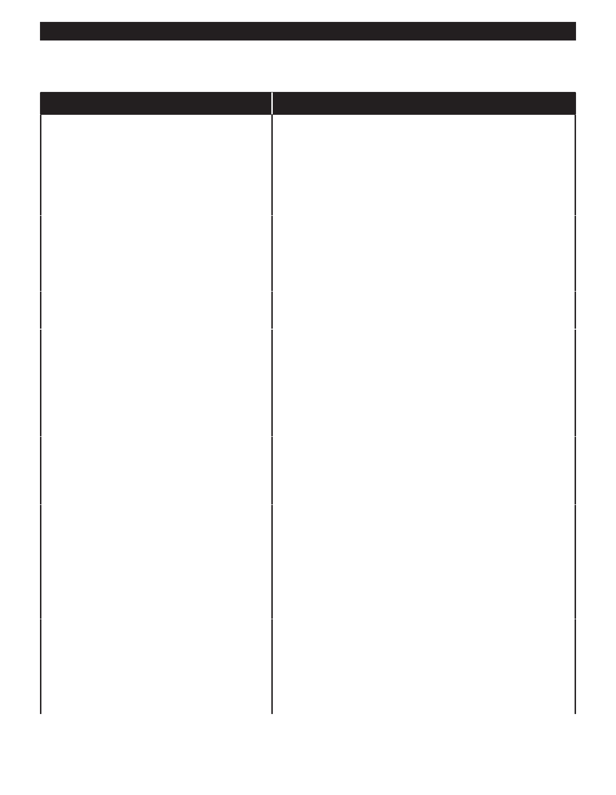

PA RT I C I PA N T R E S O U R C E G U I D E
Common Dishwasher Problems and Solutions
(continued)
Problem
Solution(s)
There is water standing inside the bottom of
1. You may need to remove the blockage from a plugged strainer
the unit
or garbage disposer.
2. You may need to clean the clogged drain hose.
See page 68.
3. Clogged pump impellor. Check pump impellor inside the
dishwasher and remove food and debris as necessary.
The water is not hot enough
1. Test and replace a faulty heating element; see page 71.
2. Verify that the water heater is working properly.
3. In older units, resident needs to verify that kitchen sink water is
hot before starting dishwasher.
The soap dispenser does not open
Repair or replace a broken or corroded dispenser.
See page 72.
The dishes are not clean after the cycle
1. Dishes must be properly rinsed before they are placed in the
is complete
dishwasher. Be sure the resident understands this.
2. Remove a plugged strainer and rinse it in the sink.
3. Clean a dirty spray arm. See page 69.
4. Test the motor and switches to make sure they are working
correctly. See page 73.
The dishes are not dry
1. Test and replace a broken heating element;
see page 71.
2. Heating element switch is defective. Check the switch and
replace if necessary.
There are spots on the dishes
1. The dishwasher may have been loaded incorrectly. Be sure the
resident understands the proper way to load the appliance. In
addition, check to be sure they are using the right soap. Using
regular dish soap is a common mistake.
2. Clean a dirty or blocked strainer.
3. Hard water problem – you may not be able to correct this issue
if it requires the installation of a water softener.
The door does not latch shut
1. The resident may have a child who sits on dishwasher door
when it is open or they may use it as a platform to hold heavy
things like full grocery bags. Be sure the resident understands
the results of such activities.
2. The door latch or door latch switch may need adjustment. See
page 74 for directions.
65